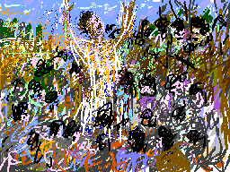

Hasan told me that when they heard the news in 1958 he and his school mates ran excited to the police station requesting to be organized into a fighting unit, given guns, and sent to defend Egypt. Naser had nationalizing the Suez Canal. Arab hearts including children felt the rhythms of liberation. England and France joined Israel in attacking to defend their right to steel, kill, and dominate. In Palestine, Israel attacked defenseless villages. At the Palestinian village of Kafr Kasem the Israeli army massacred 49 civilians. Our children dreamt of justice.
Hasan said that the policeman offered them sweets. After all, they ranged in age between ten and thirteen. They indignantly refused the candy demanding guns. So this policeman listened patiently and carefully registered their names. Then he told them to report on the following day for recruitment.
When the children returned they were immediately jailed. Word reached the parents who ran and found the police abusing the boys. "They were slapping us hard on the head and neck. Like most parents, my father tried to save me. He was told that either he sent me outside the country or else I would stay a prisoner for life. He tore his hair aghast at a government which fears children. This then is how at thirteen years of age I was exiled. I lived torn from my family. I never saw my mother again. Do you see, Samia, how our governments do not belong to us?"
My Grandmother... The Town of Beisan... The Arab City of Jerusalem... Sabah Told Me... My Home in Yafa... Khader Told Me... Olives of Palestine... Our Students... A Taxi Ride in Bethlehem... Written by Doctor Fathihe Saudi... Hasan Told Me... A Visit to Kafr Qasem... The Artist of Kafr Qasem... The Massacre at Kafr Qasem (not yet ready)
Tayseer Barakat, painter... Rana Bishara, painter and installation artist... Sari Khouri, painter... Abdel Tamam, painter... Vera Tamari, ceramist and painter... Adnan Yahya, painter and graphic artists...